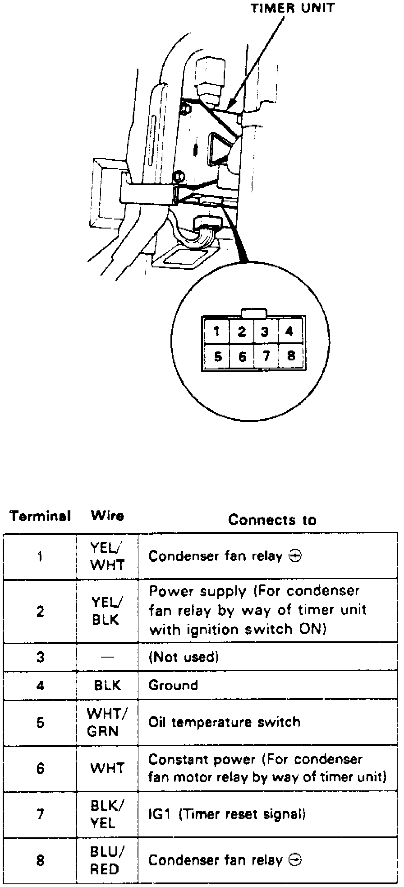

Radiator Cooling Fan Control Module: Testing and Inspection
1. Perform tests with fan timer unit/fan control module connected and ignition switch On.Fig. 16 Fan Timer Unit/Radiator Fan Control Module Terminal Identification:

2. Refer to Fig. 16 for fan timer terminals.
3. Check for voltage between terminal 4 and body ground. Voltage should be one volt or less, if more than one volt is indicated, repair open to body ground.
4. Check terminal No. 6 for battery voltage, if battery voltage is not indicated, check fuse 20, if fuse is OK, repair open in white wire.
5. With ignition switch on, check terminal No. 7 for battery voltage, if battery voltage is not indicated, check fuse 24, if fuse is OK, repair open in BLK/YEL wire.
6. With ignition switch on, check terminal No. 4 for battery voltage, if battery voltage is not indicated, check fuse 21, if fuse OK, repair open in YEL/BLK wire.
7. Check terminal No. 1 for battery voltage, if battery voltage is not indicated, replace fan timer unit, before connecting new timer check continuity between YEL/WHT wire and ground. If continuity is indicated, do not connect new timer as damage will occur.
8. Connect terminal No. 6 to body ground, condenser fan relay should come on, if not check for open in BLU/RED between fan timer and condenser fan relay, if OK, check for open between YEL/WHT and BLK/YEL wires, if OK, test condenser fan.
9. Check terminal No. 5 for battery voltage, with oil temperature below 108°C, about 11 volts should be indicated, if not, faulty oil temperature switch, short to body ground or faulty fan timer unit/radiator fan control module are indicated.